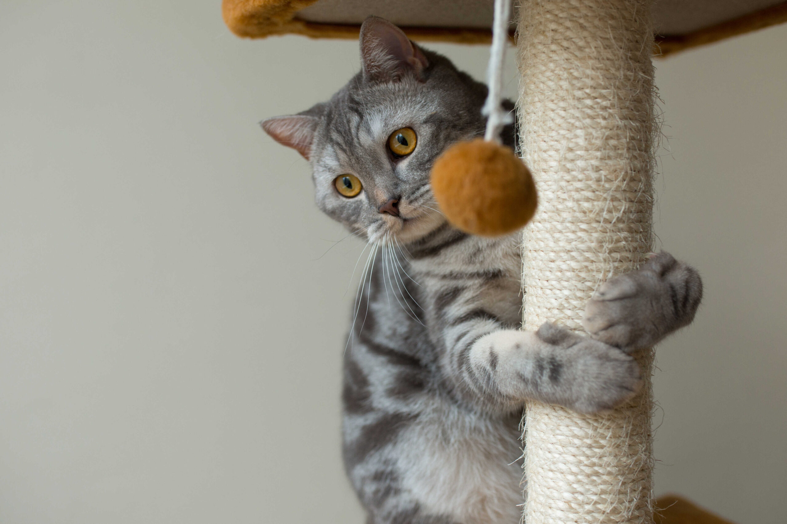

Salud
Gatos activos, gatos sanos: Previniendo la diabetes felina
Existe el mito de que los gatos son animales perezosos por naturaleza. Si bien duermen muchas horas, un gato sano necesita ráfagas de actividad intensa. La vida sedentaria en interiores (indoor) es la causa principal de la epidemia de obesidad felina y su consecuencia más grave: la diabetes tipo 2.
1. El instinto cazador como motor de salud
En la naturaleza, un gato caza varias veces al día. En casa, recibe su plato de comida (como Porte) sin esfuerzo. Para mantenerlo sano, debemos simular la caza.
El juego interactivo (usando varitas con plumas, ratones o láseres) permite que el gato corra, salte y aceche. Estos movimientos explosivos queman glucosa rápidamente y mantienen su metabolismo activo, previniendo la acumulación de grasa visceral.
2. Enriquecimiento ambiental
No siempre puedes estar ahí para jugar. Por eso es vital "catificar" tu casa para fomentar el ejercicio pasivo:
- Altura: Árboles para gatos o estantes que les obliguen a trepar y saltar.
- Comederos tipo puzzle: Hacen que el gato tenga que "trabajar" y moverse para obtener su croqueta, comiendo más despacio.
- Rascadores: Estirarse para rascar tonifica los músculos de la espalda y hombros.

3. Diabetes Felina: Una amenaza real
Los gatos obesos tienen hasta 4 veces más riesgo de desarrollar diabetes. Esta enfermedad requiere inyecciones de insulina diarias de por vida. La buena noticia es que, con una dieta alta en proteínas (como Porte Performance) y una rutina de juego de 15 minutos al día, el riesgo se reduce drásticamente.